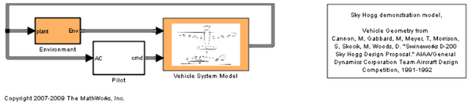
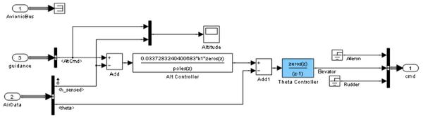
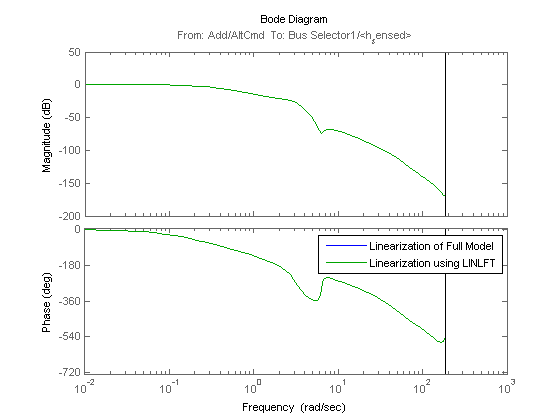

Computing Multiple Linearizations of Models with Block Variations More Efficiently
Contents
Introduction
This demonstration illustrates how to use the command LINLFT to speed up the linearization of a class of Simulink® models where a set of block parameters vary over a number of linearizations. The variation of parameters can either be inside of a FOR or a numerical optimization loop. This approach works best for larger models where the linearization of a number of blocks vary. The best improvements in the overall linearization time are for models with large model update times. To run this demo, you need Aerospace Blockset™.
Linearizing the Full Simulink Model 20 Times using LINEARIZE
In this example, you linearize a model of a lightweight airplane while varying the gain of the altitude and pitch controllers by +/- 10%. Open the Simulink® model for lightweight airplane. You can find more information on this model in the demonstration "Lightweight Airplane Design" in Aerospace Blockset demos.
mdl = 'scdskyhogg';
open_system(mdl);
io = getlinio(mdl);
op = operpoint(mdl);
 Initialize the gain of the controllers to vary with MATLAB workspace parameters k1 and k2:
open_system('scdskyhogg/Vehicle System Model/Avionics/Autopilot') blks = {'scdskyhogg/Vehicle System Model/Avionics/Autopilot/Alt Controller';... 'scdskyhogg/Vehicle System Model/Avionics/Autopilot/Theta Controller'}; set_param(blks{1},'Gain','0.0337283240400683*k1') set_param(blks{2},'Gain','-261.8699347622*k2')
Compute 20 linearizations:
t = cputime; for ct = 20:-1:1 k1 = 1+(ct-10)/100; k2 = 1+(ct-10)/100; sys_full(:,:,ct) = linearize(mdl,op,io); end
View the total time to compute the 20 linearizations in seconds:
dt_full = cputime - t
dt_full = 36.2813
A factor that impacts this time is the total time it takes to compile and evaluate block masks and resolve workspace parameters. The MATLAB Profiler is a recommended tool that you can use to identify bottlenecks in this compilation process.
Linearizing the Simulink Model 20 Times using LINLFT
In this model, only the two controller blocks vary. You can use the command LINLFT to linearize the Simulink model with the controller blocks removed. You need to linearize this portion of the model once.
t = cputime; sys_fixed = linlft(mdl,io,blks); k1_0 = 0.0337283240400683; k2_0 = -261.8699347622; Alt = zpk([0.998853192323097;0.977076159863424],... [1;0.920841826994512],k1_0,1/60); Theta = zpk(0.999268009521977,1,k2_0,1/60); BlockSubs(1) = struct('Name',blks{1},... 'Value', Alt); BlockSubs(2) = struct('Name',blks{2},... 'Value', Theta);
You can combine the varied block linearizations using the command LINLFTFOLD. Compute the 20 linearizations:
for ct = 20:-1:1 % Specify new values for the blocks BlockSubs(1).Value.k = k1_0*(1+(ct-10)/100); BlockSubs(2).Value.k = k2_0*(1+(ct-10)/100); sys_by_parts(:,:,ct) = linlftfold(sys_fixed,BlockSubs); end
View the total time to compute the 20 linearizations using LINLFT in seconds
dt_by_parts = cputime - t
dt_by_parts =
4.5000
Comparing the Results
In this example, the gain of the controllers does not have any impact on the operating point of the Simulink model. The linearizations using both approaches are equivalent.
bode(sys_full(:,:,1),sys_by_parts(:,:,1)) legend('Linearization of Full Model','Linearization using LINLFT')
Calculate the resulting time improvement ratio:
ratio = dt_full/dt_by_parts
ratio =
8.0625
Close the Simulink model
bdclose(mdl);